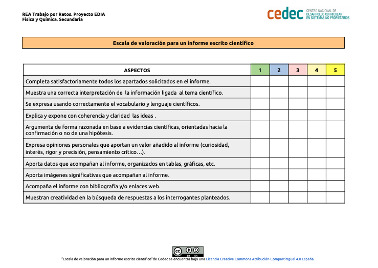

Los aislantes y sus efectos
La ropa de abrigo no deja escapar el calor de nuestro cuerpo y nos mantiene calientes; es aislante del calor. Las sartenes son metálicas porque, al calentarlas, el conducen el calor fácilmente y calientan la comida. Por eso se dice que los metales son conductores del calor. En cambio, el mango es aislante para que no nos quememos al coger la sartén.

{kind=link}
Sabemos que existen materiales aislantes y materiales conductores, pero ¿sabemos diferenciarlos? ¿Cuál es el material más aislante?
Vamos a investigar diferentes materiales y ver su conductividad calorífica.
¿Qué material aísla más?
- Duración:
- Tres sesiones
- Agrupamiento:
- Pequeño y gran grupo
Investigaremos de forma experimental la capacidad de aislamiento de diferentes materiales, realizaremos las actividades en grupo, y al final comparamos los resultados en el grupo grande. En un principio realizaremos dos actividades experimentales y en la tercera actividad diseñaremos el experimento a partir de unos materiales determinados, realizaremos un informe sobre el experimento planificado y cada grupo lo expondrá en el grupo de clase.

Antes de empezar las actividades, veamos la siguiente tabla informativa sobre materiales y su capacidad aislante:
|
Buenos conductores |
Malos conductores |
Aislantes |
|
|
|
Ahora que ya sabemos un poco, vamos a empezar a experimentar.
Actividad 1: ¿Qué tejido aísla más?
En esta actividad vamos a experimentar con diferentes tejidos para comprobar qué tejido aísla más:
Empezamos preparando los materiales y productos:
Materiales y productos
- Tres frascos.
- Termómetro.
- Cronómetro.
- Agua caliente.
- Tejido de algodón.
- Tejido de lana.
Procedimiento
Tenemos tres frascos y los numeramos. El frasco uno lo dejamos sin nada, el frasco dos lo envolvemos con tejido de lana y el frasco tres lo envolvemos con tejido de algodón.
Ponemos la misma cantidad de agua caliente en los tres frascos y a la misma temperatura, tapamos los frascos, los dejamos en un sitio fresco y al cabo de media hora medimos la temperatura.
Hipótesis y conclusiones
Antes de empezar a anotar temperaturas, realizamos nuestra hipótesis.
Comprobamos los resultados experimentalmente y anotamos las temperaturas
|
Variables |
Volumen de agua caliente |
Aislante |
Temperatura inicial |
Temperatura al cabo de media hora |
|
Frasco 1 |
50 mL |
Sin aislante |
||
|
Frasco 2 |
50 mL |
Tejido de lana |
||
|
Frasco 3 |
50 mL |
Tejido algodón |
Realizamos nuestras conclusiones.
Actividad 2 ¿Qué tejido aísla más?
Vamos a realizar el mismo experimento de la actividad uno pero en vez de utilizar agua caliente, vamos a utilizar agua con hielo.
Materiales y productos
- Tres frascos.
- Termómetro.
- Cronometro.
- Agua con hielo.
- Tejido de algodón.
- Tejido de lana.
Procedimiento
Tenemos tres frascos y los numeramos. El frasco uno lo dejamos sin nada, el frasco dos lo envolvemos con tejido de lana y el frasco tres lo envolvemos con tejido de algodón.
Ponemos la misma cantidad de agua con hielo en los tres frascos, medimos la temperatura inicial de los tres frascos, tapamos los frascos y dejamos los frascos cerca de una fuente de calor durante media hora , y medimos la temperatura.
Hipótesis y conclusiones
Antes de empezar a anotar temperaturas, realizamos nuestra hipótesis.
Comprobamos los resultados experimentalmente y anotamos las temperaturas
|
Variables |
Volumen de agua con hielo |
Aislante |
Temperatura inicial |
Temperatura al cabo de media hora |
|
Frasco 1 |
50 ml |
Sin aislante |
|
|
|
Frasco 2 |
50ml |
Tejido de lana |
|
|
|
Frasco 3 |
50ml |
Tejido algodón |
|
|
Realizamos nuestras conclusiones.
Actividad 3 "Planificamos nuestro experimento"
Vamos a diseñar un experimento que mida la conductividad de materiales diferentes. Cada grupo va a diseñar un experimento utilizando una lata de refresco y un material aislante.
El profesor nos propone los siguientes materiales:
| Material | Grupo |
|
Papel de periódico |
|
|
Tejido de algodón |
|
|
Papel de aluminio |
|
|
Lamina de corcho |
Recordemos que además necesitaremos otros materiales que se nos ocurran. Una vez planificado y realizado el experimento, cada grupo realiza un informe y expone la investigación realizada.
Para realizar el informe, utilizamos la guía para realizar un informe de laboratorio (descargar en formato editable odt y en pdf).
Entre todos los grupos se exponen las conclusiones y las dificultades encontradas.
Evaluación y reflexión
Una vez que hemos finalizado la tarea, es un buen momento para reflexionar en nuestro diario de aprendizaje. Algunas sugerencias pueden ser:
- ¿Qué he aprendido?
- ¿Qué me ha sorprendido más de todo el proceso? ¿Por qué?
- ¿He cambiado alguna idea previa? ¿Cuál?
- ¿Qué me ha resultado más difícil? ¿Por qué?
Evaluación
Utilizaremos las siguientes escalas de valoración
1.-Escala de valoración para un trabajo de laboratorio (descargar en formato editable odt y pdf)

2.-Escala de valoración para un informe escrito científico (descargar en formato editable odt y pdf)
